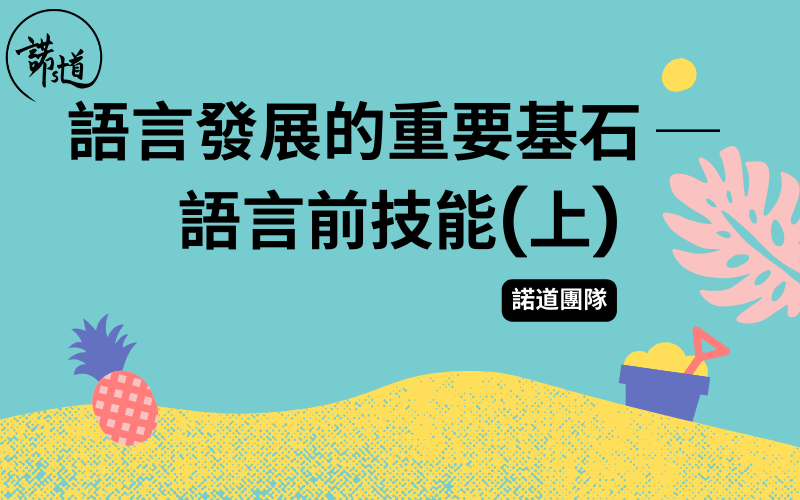

孩⼦到了牙牙學語的階段，家長都會特別留意孩⼦的語言能⼒。對於語言能⼒較弱的孩⼦來說，很多時⼤家會問「到底何時他才懂得說話呢︖」
要知道在提升孩⼦語言能⼒的時候，我們絕對不能忽略語言前技能。語言前技能是孩⼦在懂得說話前(⼤概1歲前)便開始發展和掌握的⼀些技巧，是語言理解和語言表達的重要基⽯。
這些技巧的穩固程度，與⽇後的語言發展有着密切關係。
今次先跟⼤家分享其中六項語言前技能。
眼神接觸(Eye Contact)
眼神接觸是⼀種重要的非語言溝通⽅式。與⼈對話時配以適當的眼神接觸、表情、⼿勢、身體姿勢等，就能傳達更豐富的資訊。
孩⼦⼀歲前就開始對⼈的臉部產⽣興趣，會留意及注視溝通對象的嘴巴，然後嘗試模仿。與⼈有眼神接觸時，孩⼦便能從別⼈的表情和眼神中認識和理解他⼈情感，是社交溝通發展重要的⼀環。
專注(Attention)
孩⼦在成長學習的過程中，需要有⼀定的專注⼒才能留意環境中的⼈、事、物，並從中學習。
⽗母可以觀察孩⼦在玩玩具時能不能集中並維持⼀段時間。九至⼗個⽉⼤的幼兒來說，若能維持2-3分鐘的專注⼒在⼀樣玩具上就相當理想了。
共享專注(Joint Attention)
共享專注是指與溝通對象⼀起專注於同⼀物件或事情上。孩⼦在九個⽉左右開始建⽴共享專注的能⼒，這能⼒包括「回應」以及「引發」。
例如，你看到地上有雀仔，指著雀仔並向旁邊的孩⼦說：「睇吓！」，孩⼦將⽬光及專注由⼿上的玩具轉移到雀仔的⽅向以「回應」你引發的共享專注。
未掌握單字⽤作溝通的幼兒通常透過展⽰或⼿勢引發共享專注，例如他看到閃著光的玩具會望向你，並展⽰給你看。
共同專注的時刻就是孩⼦學習語言的最佳時機。試想像你想教孩⼦這是⼀⽀筆，指著這⽀筆說：「筆筆。」，唯有當孩⼦的⽬光跟你⼀樣放在這⽀筆上⾯，他才能把聽到的「筆」這個⾳跟眼前這個物件連上關係，從⽽學習⼀個又⼀個概念。
物體恆存(Object Permanence)
物體恆存是指孩⼦意識到「即使東西不在眼前，但它仍然存在，⽽不是沒有了。」。
如果您將孩⼦眼前的玩具藏起來，由於仍未建⽴物體恆存的能⼒，半歲以下的幼兒可能會感到困惑，很快就會放棄尋找它。
六至七個⽉⼤開始，孩⼦逐漸發展物體恆存的能⼒，他們會在玩具消失於眼前後尋找它，因為已經建⽴了「玩具曾經存在」的認知。
物體恆存和語言有直接關係，當孩⼦建⽴了對於物件的記憶及認知，就會推動他們以語言代表不在眼前的東西。
輪流作轉(Turn Taking)
這個語言前技能的重點就是「輪流」！
⽣活中到處都是輪流作轉的例⼦。孩⼦⼀個⼀個輪著滑滑梯、捉棋時⼀個⼀個順序擲骰⼦⾏棋。孩⼦先從遊戲中學習輪流，知道何時輪到⾃⼰，何時到對⽅，將來懂得說話的時候就能將概念延伸至「你⼀言、我⼀語」。由此可⾒掌握輪流概念對孩⼦的語言及社交發展有很⼤影響。
因果概念(Causality)
「因果關係」是其中⼀個四至七個⽉⼤幼兒開始掌握的重要概念。
孩⼦發現搖⼀搖(因)⼿上的公仔會令它發出聲⾳(果)、按下按鈕(因)公仔會彈出(果)。⽣活經驗讓孩⼦了解到他可以透過⼀個⾏為得出⼀個結果，推動他不斷探索身邊的事物。
孩⼦先從⽣活或玩玩具中掌握因果概念，懂得說話的時候就會了解到當他說「抱抱。」(因)，爸爸媽媽就會抱起他(果)。
總結
孩⼦需要掌握⼀系列語言前技能，為⽇後的語言發展打下穩固基礎。下篇⽂章將為⼤家介紹另外六項語言前技能！
把這篇⽂章分享給身邊跟你同樣關⼼孩⼦成長的朋友，讓我們⼀起和孩⼦健康快樂地成長。
如有任何問題或需要幫忙，歡迎你跟諾道團隊聯絡，我們樂意為你提供協助！